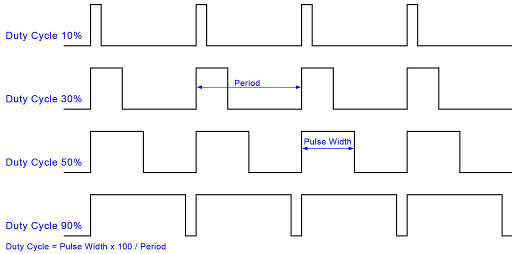

|
Puzzlebot Library
|


|
|
Puzzlebot Library
|
|
Microcontrollers are a digital component, i.e. they operate based on signals which are purely “on” or “off”. As such, it is easy to control objects which are similarly digitally operated, however, there are often occasions when a component needs a variable voltage. For example, a DC motor is controlled by varying its input voltage such that 0V stops the motor, and at maximum voltage it runs at full speed. PWM is used to replicate an analogue signal with a digital signal.
A PWM signal consists of a high frequency square wave, with a varying duty cycle. The duty cycle is the proportion of the time period that the signal is “on” for:

The signal is operated at a high enough frequency such that it has the effect of an analogue signal, with a voltage given by:
\( V_{out}=DutyCycle \times V_{supply}\)
The frequency that should be chosen depends on the application. If the signal is being used to control an LED, to make it dimmable, then it should be higher than can be seen by the human eye, i.e. higher than 24 Hz. If it’s being used to control a motor, it should be higher than the limit of human hearing (20 kHz), as, although the motor moves as if it were being sent an analogue signal, the sound of the signal passing through the coils can still be heard.
The MotorDriver class can control two types of motors by using pwm signals:
Additional configurable parameters: